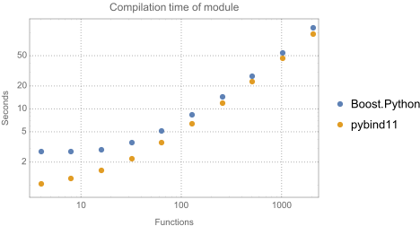
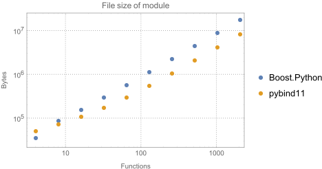

Benchmark
The following is the result of a synthetic benchmark comparing both compilation time and module size of pybind11 against Boost.Python. A detailed report about a Boost.Python to pybind11 conversion of a real project is available here: [1].
Setup
A python script (see the docs/benchmark.py file) was used to generate a set
of files with dummy classes whose count increases for each successive benchmark
(between 1 and 2048 classes in powers of two). Each class has four methods with
a randomly generated signature with a return value and four arguments. (There
was no particular reason for this setup other than the desire to generate many
unique function signatures whose count could be controlled in a simple way.)
Here is an example of the binding code for one class:
...
class cl034 {
public:
cl279 *fn_000(cl084 *, cl057 *, cl065 *, cl042 *);
cl025 *fn_001(cl098 *, cl262 *, cl414 *, cl121 *);
cl085 *fn_002(cl445 *, cl297 *, cl145 *, cl421 *);
cl470 *fn_003(cl200 *, cl323 *, cl332 *, cl492 *);
};
...
PYBIND11_MODULE(example, m) {
...
py::class_<cl034>(m, "cl034")
.def("fn_000", &cl034::fn_000)
.def("fn_001", &cl034::fn_001)
.def("fn_002", &cl034::fn_002)
.def("fn_003", &cl034::fn_003)
...
}
The Boost.Python version looks almost identical except that a return value
policy had to be specified as an argument to def(). For both libraries,
compilation was done with
Apple LLVM version 7.0.2 (clang-700.1.81)
and the following compilation flags
g++ -Os -shared -rdynamic -undefined dynamic_lookup -fvisibility=hidden -std=c++14
Compilation time
The following log-log plot shows how the compilation time grows for an increasing number of class and function declarations. pybind11 includes many fewer headers, which initially leads to shorter compilation times, but the performance is ultimately fairly similar (pybind11 is 19.8 seconds faster for the largest largest file with 2048 classes and a total of 8192 methods – a modest 1.2x speedup relative to Boost.Python, which required 116.35 seconds).
Module size
Differences between the two libraries become much more pronounced when considering the file size of the generated Python plugin: for the largest file, the binary generated by Boost.Python required 16.8 MiB, which was 2.17 times / 9.1 megabytes larger than the output generated by pybind11. For very small inputs, Boost.Python has an edge in the plot below – however, note that it stores many definitions in an external library, whose size was not included here, hence the comparison is slightly shifted in Boost.Python’s favor.
